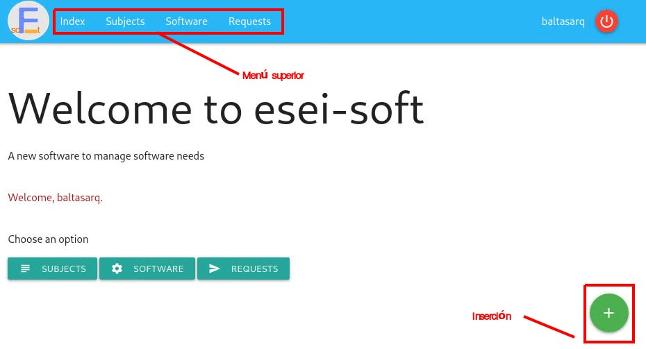
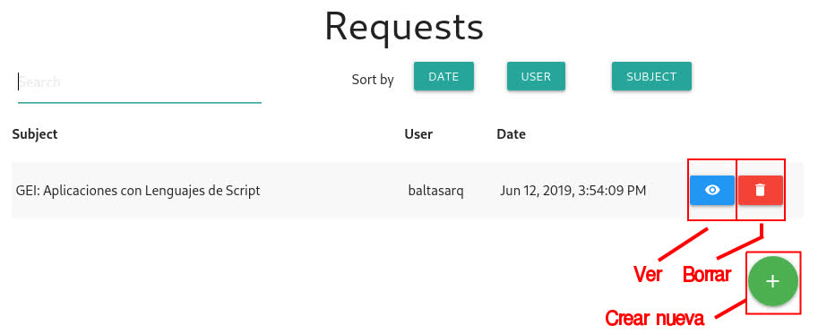
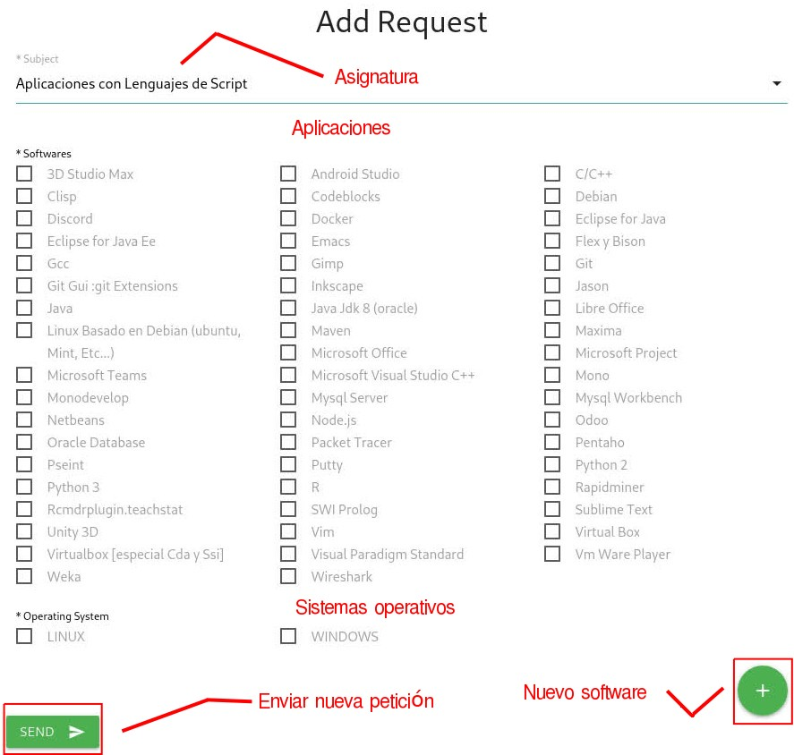
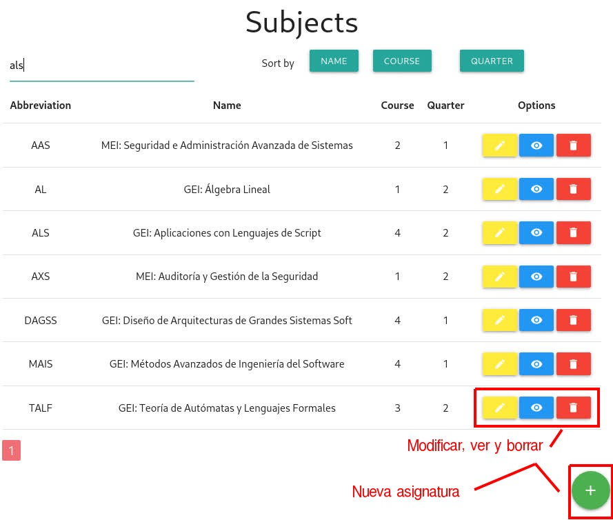
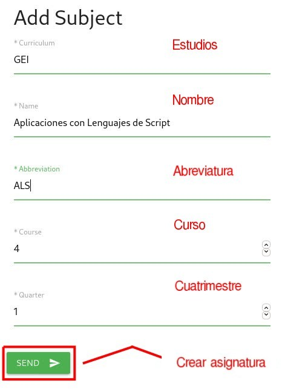
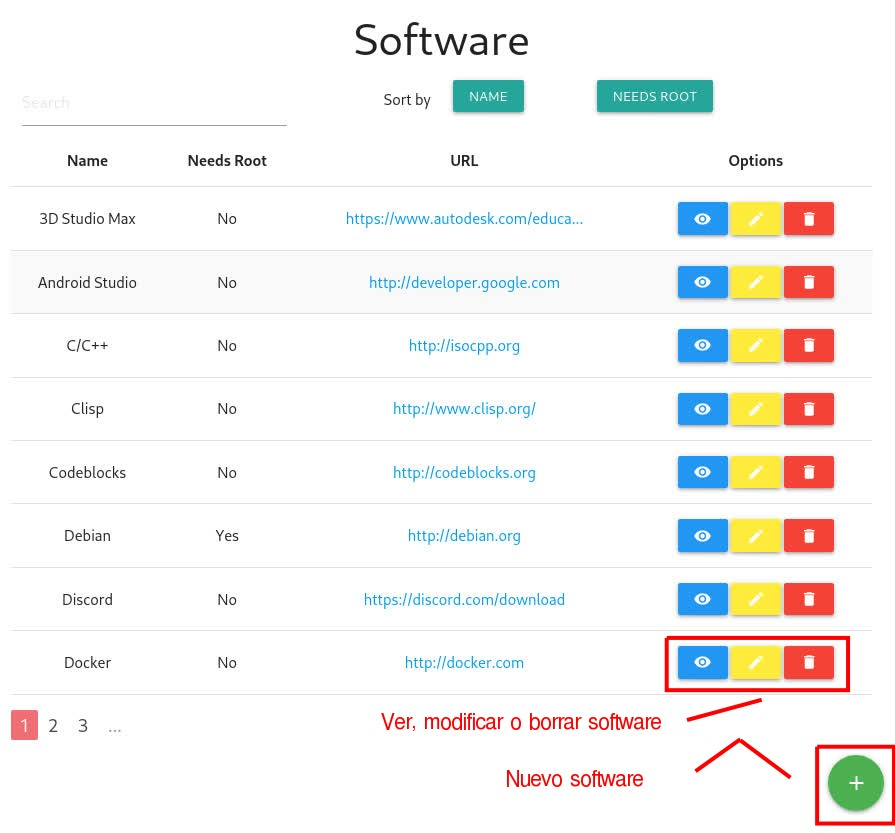

La aplicación mantiene constantemente la misma estructura en cuanto a las partes superior e inferior: desde el menú superior es posible cambiar entre las tres posibles entidades a manejar (asignaturas, software, peticiones), mientras que en la parte inferior, siempre que se es posible insertar algo, aparecerá un signo de sumar como un botón. En el caso de esta pantalla, permite acceder directamente a realizar petición.
En esta primera pantalla, el menú superior aparece duplicado debajo del mensaje de bienvenida.
Para realizar una nueva petición, es posible pulsar en el '+' de la pantalla de introducción, o bien pulsar en el menú la opción peticiones/requests.

En esta pantalla aparecen las peticiones realizadas, que pueden verse o eliminarse. De nuevo, el botón '+' permite crear una nueva petición.
Pantalla de introducción de datos para una nueva petición. Una petición consiste en una enumeración de aplicaciones, y los sistemas operativos donde deben estar instalados, para una asignatura concreta.

En el desplegable de la parte superior se escoge la asignatura, y después se marcan las aplicaciones deseadas. Una vez marcadas las aplicaciones a instalar, y al menos un sistema operativo objetivo, solo será necesario pulsar en enviar/send.
Es posible que la asignatura no exista todavía: en este caso, se pulsa en la opción asignaturas del menú superior, cancelando la nueva petición, que deberá ser repetida tras crearla. También es posible que el software no exista todavía, con lo que será necesario pulsar en el '+' para crear una nueva aplicación. En este caso, al terminar de registrar el nuevo software se vuelve a la petición, pero será necesario volver a escoger la asignatura y marcar las apps requeridas.
Las asignaturas forman parte de las materias dentro del plan de estudios de la ESEI.

Las opciones pueden variar según el nivel de acceso del usuario, pero en general las asignaturas pueden verse (examinar detalles), modificarlas e incluso borrarlas. Cuando se elimina una asignatura, las peticiones relacionadas con ella también se eliminan.
Puede crearse una nueva asignatura en cualquier momento.

Tras rellenar el currículum (en el momento de escribir este documento, GEI (grado), o MEI (máster), nombre de la asignatura, abreviatura, curso y período (cuatrimestre), la asignatura queda registrada y se pueden crear peticiones contra ella.
El software o aplicaciones son cualquier tipo de componente software (aplicaciones, librerías, frameworks...), que se necesite para impartir una asignatura, excluyendo los sistemas operativos y aquellas aplicaciones básicas (editor de textos básico, como el bloc de notas, calculadora...).

El software puede hojearse sin problema, si bien las posibilidades de modificarlo y eliminarlo dependerán del nivel de acceso del usuario. De nuevo, el botón '+' permite crear un nuevo software.
Tras rellenar los datos y pulsar en send/enviar, la aplicación queda registrada y se puede incluir en peticiones.